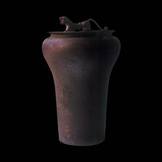

Sino
MNMC 5106
MNMC 5106
960-1297 MNMC 5108
Ming (1368-1644) MNMC 5126
Séc. XVIII MNMC 8691
Séc. XVIII – séc. XIX MNMC 9135
Séc. XIX MNMC 4250
Séc. XIX MNMC 8360
Séc. XIX MNMC 5145
1751 MNMC 2044
Séc. XVII MNMC 3291
Séc. XIII MNMC 6032
Séc. XV MNMC 7101
Séc. XV MNMC 7102
Séc. XVI MNMC 8032 8033
Séc. XIII MNMC 5303 5324
Séc. XVI MNMC 2221